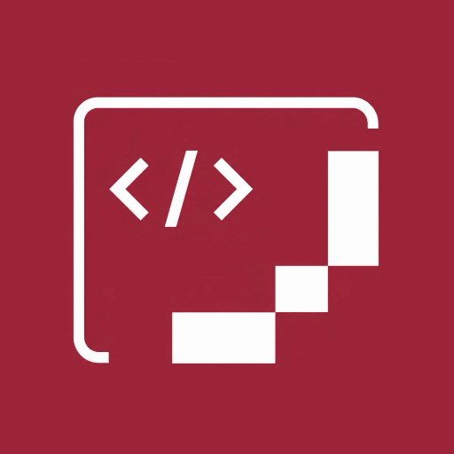

راستچین برای دسکتاپ
یکپارچهساز دسکتاپ
پایدار برای ChatGPT و Codex
فارسی، خوانا و طبیعی در برنامههایی که همین حالا استفاده میکنید.
راستچین همهٔ پردازشها را روی دستگاه شما انجام میدهد و فایلهای اصلی ChatGPT یا Claude را تغییر نمیدهد.
کاملاً محلی
بدون ذخیرهٔ گفتگو، بدون سرور و بدون تغییر دائمی فایلهای برنامه.
پشتیبانی برنامهها
ChatGPT و Codex برای راستچین فارسی آمادهاند.
یکپارچهسازی پایدار ChatGPT و Codex در ویندوز، مکاواس و لینوکس در دسترس است. Claude Desktop همچنان اتصال لازم برای اعمال امن استایل را مسدود میکند و پس از ارائهٔ روش رسمی پشتیبانی خواهد شد.